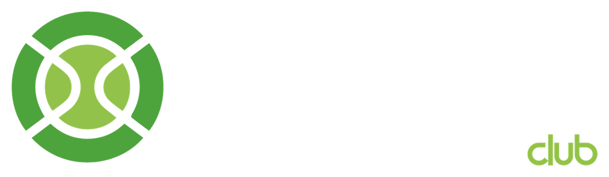
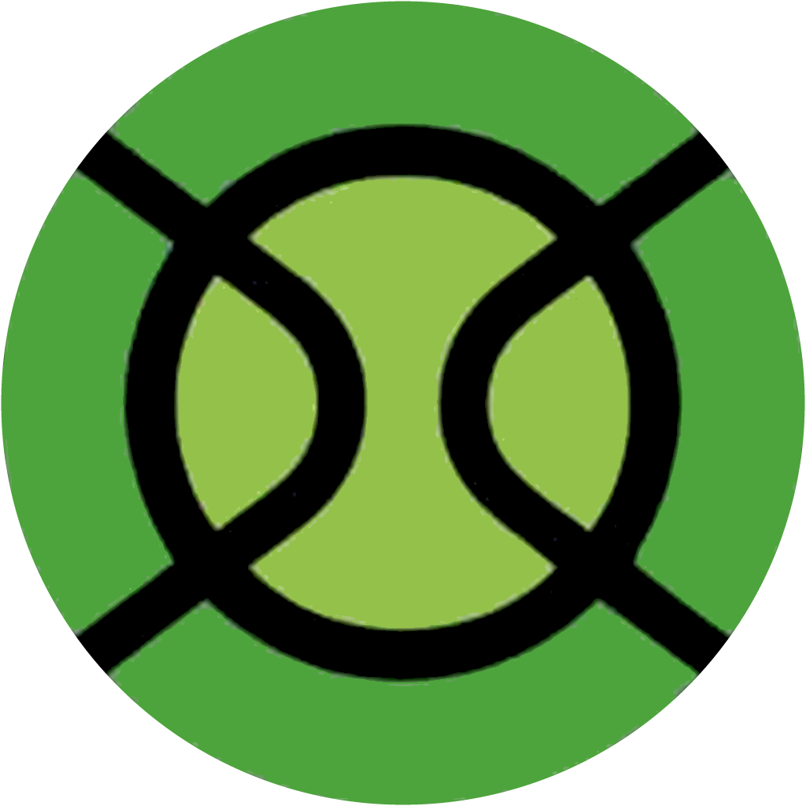
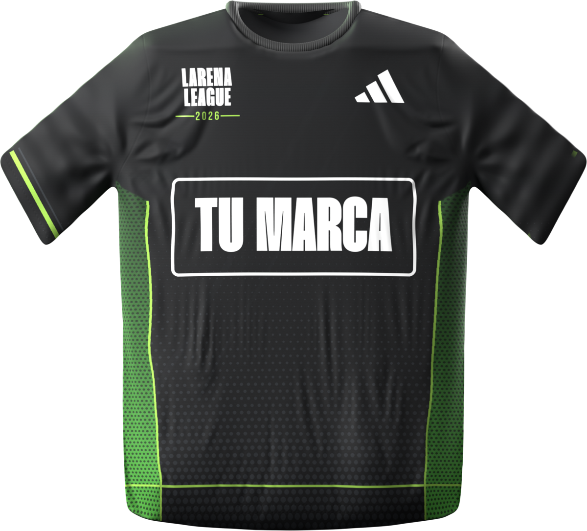
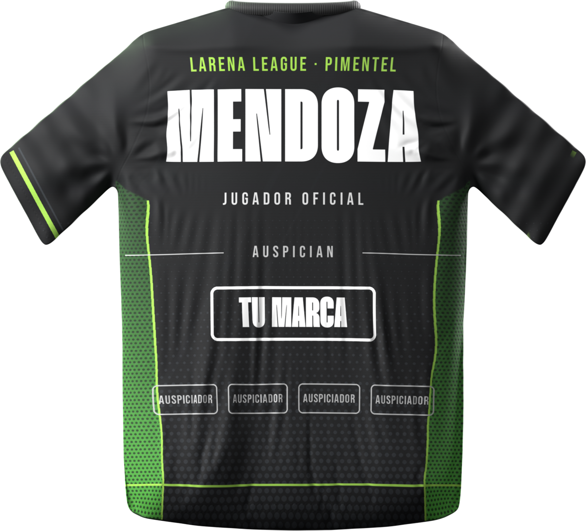

Encuadre de la cámara de transmisión de Larena: el fondo y las cabeceras quedan en pantalla todo el partido. La cancha de tu marca es la que se transmite.

Polo negro dry-fit sublimado, con paneles de malla y estampado en relieve, que recibe cada inscrito. Se usa en el torneo, en el podio y después, en cada partido.


| En el club | 120 jugadores + 1 acompañante promedio + ~200 visitas | ≈450 |
| Transmisiones en vivo | ~20 partidos × ~250 vistas (en vivo + repetición) | ≈5,000 |
| Historias de los jugadores | 120 jugadores × 2 historias × ~150 vistas. Llegan a sus seguidores de Lima, Piura, Trujillo, Arequipa | ≈36,000 |
| Contenido de Larena | ~20 piezas del torneo (afiches, reels, historias, resultados) × ~1,500 vistas | ≈30,000 |
Estimación con supuestos explícitos: no hay cifras públicas de audiencia de torneos amateurs en el Perú. Se reemplaza con las estadísticas de Instagram de la edición Toyota Nor Autos antes de la reunión.
Titularidad del torneo y paquete de visibilidad del evento.
Vendes directo a 450 personas durante el fin de semana.
Tu producto en la mano del jugador entre partidos.
Sombrillas, mesas, hieleras y lonas con tu marca en las zonas de descanso.